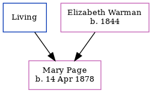

Mary Julia Page 1878 -
[ Home ] | [ Calendar ] | [ Surnames Index ] | [ Errors ] | [ Family History ]The child of James Page (a mariner) and Elizabeth Warman, Mary Page, the second cousin twice-removed on the father's side of Nigel Horne, was born in Folkestone, Kent, England on 14 Apr 18781,2,3 and baptised there at Christ Church on 5 May 1878. On 3 Apr 1881, she was living at St Johns Street in Folkestone1.
Parents
- James
- Elizabeth Ann was born in 1844
Citations
- 1881 England, Wales & Scotland Census - Findmypast (was age 2 and the daughter of the head of the household)
- England & Wales births 1837-2006 - Findmypast
- Kent Baptisms - Findmypast
Media
England & Wales births 1837-2006 - BMD/B/1878/2/AZ/000439/312
Kent Baptisms - GBPRS/CANT/B/96012983
England Births & Baptisms 1538-1975 - R_884910163
England Births & Baptisms 1538-1975 - R_884904370
Family Tree
Map
Generated by ged2site. Last updated on Jul 3, 2024